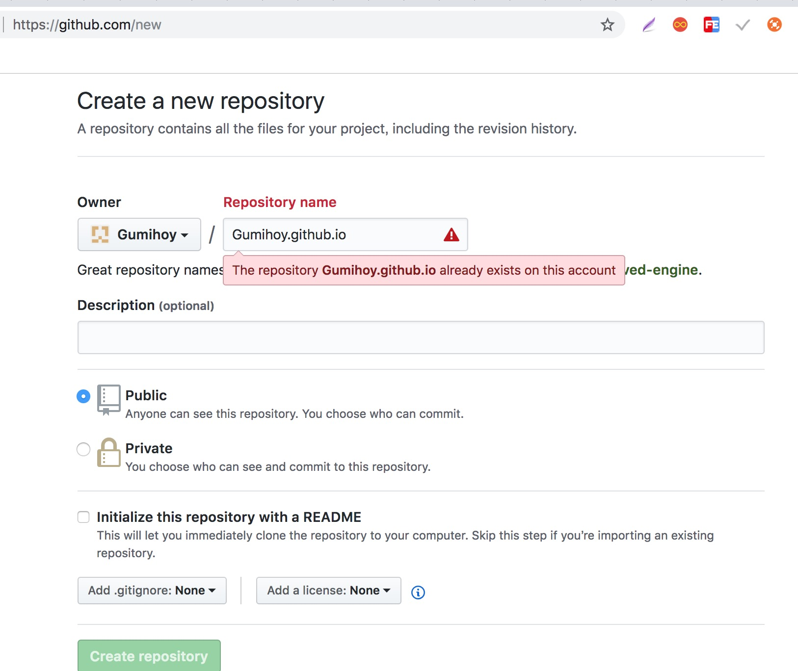
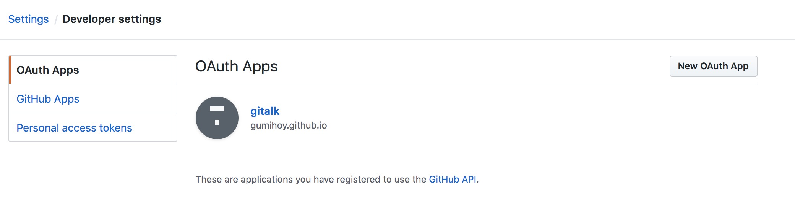
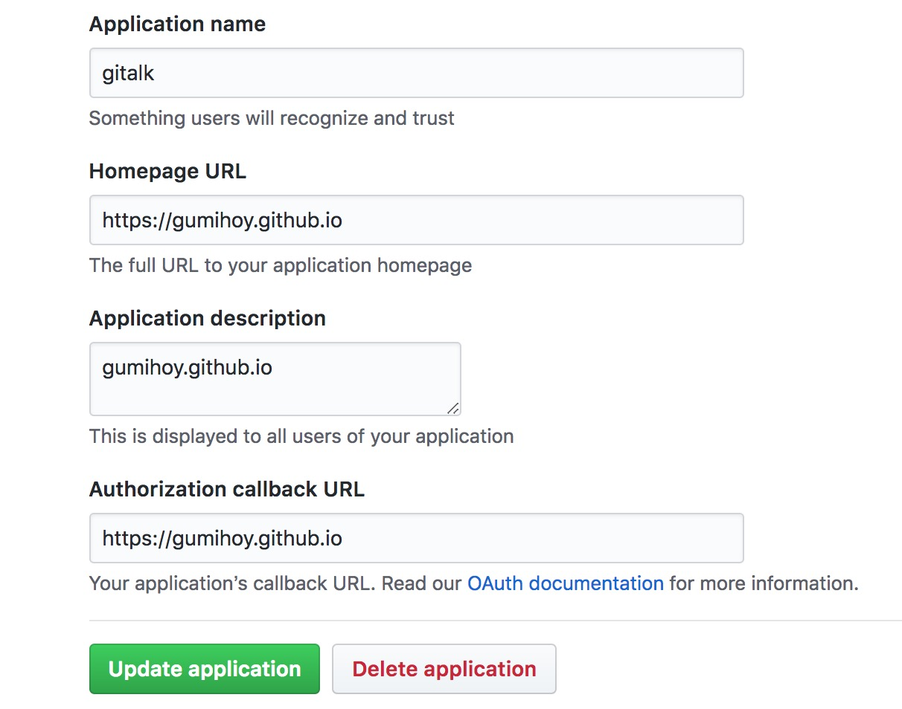

<!DOCTYPE html>
<html>
<head><meta name="generator" content="Hexo 3.9.0">
  <meta charset="utf-8">
  
  <title>Gihub搭建Hexo | Hexo</title>
  <meta name="viewport" content="width=device-width, initial-scale=1, maximum-scale=1">
  <meta name="description" content="当前教程在Mac上面搭建Hexo 环境准备Nodejs安装1234# 测试是否安装$ node -v# 如果没有安装，请安装$ node install">
<meta name="keywords" content="Hexo">
<meta property="og:type" content="article">
<meta property="og:title" content="Gihub搭建Hexo">
<meta property="og:url" content="https://gumihoy.github.io/2012/08/01/Github搭建Hexo/index.html">
<meta property="og:site_name" content="Hexo">
<meta property="og:description" content="当前教程在Mac上面搭建Hexo 环境准备Nodejs安装1234# 测试是否安装$ node -v# 如果没有安装，请安装$ node install">
<meta property="og:locale" content="default">
<meta property="og:image" content="https://gumihoy.github.io/2012/08/01/Github搭建Hexo/1542073066701.jpg">
<meta property="og:image" content="https://gumihoy.github.io/2012/08/01/Github搭建Hexo/1542037823098.jpg">
<meta property="og:image" content="https://gumihoy.github.io/2012/08/01/Github搭建Hexo/1542074055382.jpg">
<meta property="og:updated_time" content="2019-11-02T07:12:18.091Z">
<meta name="twitter:card" content="summary">
<meta name="twitter:title" content="Gihub搭建Hexo">
<meta name="twitter:description" content="当前教程在Mac上面搭建Hexo 环境准备Nodejs安装1234# 测试是否安装$ node -v# 如果没有安装，请安装$ node install">
<meta name="twitter:image" content="https://gumihoy.github.io/2012/08/01/Github搭建Hexo/1542073066701.jpg">
  
    <link rel="alternative" href="/atom.xml" title="Hexo" type="application/atom+xml">
  
  
    <link rel="icon" href="/img/favicon.png">
  
  
  <link rel="stylesheet" href="/css/style.css">
  <link rel="stylesheet" href="/font-awesome/css/font-awesome.min.css">
  <link rel="apple-touch-icon" href="/apple-touch-icon.png">
  
  
      <link rel="stylesheet" href="/fancybox/jquery.fancybox.css">
  
  <!-- 加载特效 -->
    <script src="/js/pace.js"></script>
    <link href="/css/pace/pace-theme-flash.css" rel="stylesheet">
  <script>
      var yiliaConfig = {
          rootUrl: '/',
          fancybox: true,
          animate: false,
          isHome: false,
          isPost: true,
          isArchive: false,
          isTag: false,
          isCategory: false,
          open_in_new: false
      }
  </script>
</head></html>
<body>
  <div id="container">
    <div class="left-col">
    <div class="overlay"></div>
<div class="intrude-less">
    <header id="header" class="inner">
        <a href="/" class="profilepic">
            
            
            
        </a>

        <hgroup>
          <h1 class="header-author"><a href="/" title="Hi Mate">Gumihoy</a></h1>
        </hgroup>

        
        
        
            <div id="switch-btn" class="switch-btn">
                <div class="icon">
                    <div class="icon-ctn">
                        <div class="icon-wrap icon-house" data-idx="0">
                            <div class="birdhouse"></div>
                            <div class="birdhouse_holes"></div>
                        </div>
                        <div class="icon-wrap icon-ribbon hide" data-idx="1">
                            <div class="ribbon"></div>
                        </div>
                        
                        
                        <div class="icon-wrap icon-me hide" data-idx="3">
                            <div class="user"></div>
                            <div class="shoulder"></div>
                        </div>
                        
                    </div>
                    
                </div>
                <div class="tips-box hide">
                    <div class="tips-arrow"></div>
                    <ul class="tips-inner">
                        <li>菜单</li>
                        <li>标签</li>
                        
                        
                        <li>关于我</li>
                        
                    </ul>
                </div>
            </div>
        

        <div id="switch-area" class="switch-area">
            <div class="switch-wrap">
                <section class="switch-part switch-part1">
                    <nav class="header-menu">
                        <ul>
                        
                            <li><a href="/">首页</a></li>
                        
                            <li><a href="/archives">全部文章</a></li>
                        
                            <li><a href="/categories">分类</a></li>
                        
                            <li><a href="/tags">标签</a></li>
                        
                            <li><a href="/about">关于</a></li>
                        
                        </ul>
                    </nav>
                    <nav class="header-nav">
                        <ul class="social">
                            
                                <a class="fl github" target="_blank" href="https://github.com/gumihoy" title="github">github</a>
                            
                        </ul>
                    </nav>
                </section>
                
                
                <section class="switch-part switch-part2">
                    <div class="widget tagcloud" id="js-tagcloud">
                        <a href="/tags/Algorithm/" style="font-size: 10px;">Algorithm</a> <a href="/tags/Elasticsearch/" style="font-size: 11px;">Elasticsearch</a> <a href="/tags/Git/" style="font-size: 10px;">Git</a> <a href="/tags/Hash/" style="font-size: 10px;">Hash</a> <a href="/tags/Hexo/" style="font-size: 10px;">Hexo</a> <a href="/tags/Homebrew/" style="font-size: 10px;">Homebrew</a> <a href="/tags/Iterm2/" style="font-size: 10px;">Iterm2</a> <a href="/tags/Java/" style="font-size: 14px;">Java</a> <a href="/tags/JavaAgent/" style="font-size: 10px;">JavaAgent</a> <a href="/tags/KNN/" style="font-size: 10px;">KNN</a> <a href="/tags/Kafka/" style="font-size: 10px;">Kafka</a> <a href="/tags/LaTeX/" style="font-size: 10px;">LaTeX</a> <a href="/tags/Mac/" style="font-size: 12px;">Mac</a> <a href="/tags/Markdown/" style="font-size: 10px;">Markdown</a> <a href="/tags/MySQL/" style="font-size: 18px;">MySQL</a> <a href="/tags/MySQL实战45讲/" style="font-size: 17px;">MySQL实战45讲</a> <a href="/tags/NoSQL/" style="font-size: 14px;">NoSQL</a> <a href="/tags/PyTorch/" style="font-size: 10px;">PyTorch</a> <a href="/tags/Python/" style="font-size: 10px;">Python</a> <a href="/tags/RPC/" style="font-size: 10px;">RPC</a> <a href="/tags/Redis/" style="font-size: 14px;">Redis</a> <a href="/tags/SQL/" style="font-size: 11px;">SQL</a> <a href="/tags/SQL转换/" style="font-size: 12px;">SQL转换</a> <a href="/tags/SVM/" style="font-size: 10px;">SVM</a> <a href="/tags/Slow/" style="font-size: 10px;">Slow</a> <a href="/tags/SpringBoot/" style="font-size: 11px;">SpringBoot</a> <a href="/tags/Tensorflow/" style="font-size: 10px;">Tensorflow</a> <a href="/tags/Thrift/" style="font-size: 10px;">Thrift</a> <a href="/tags/Tomcat/" style="font-size: 10px;">Tomcat</a> <a href="/tags/Trace/" style="font-size: 10px;">Trace</a> <a href="/tags/ZooKeeper/" style="font-size: 10px;">ZooKeeper</a> <a href="/tags/中文分词/" style="font-size: 10px;">中文分词</a> <a href="/tags/人工智能/" style="font-size: 14px;">人工智能</a> <a href="/tags/信息熵/" style="font-size: 12px;">信息熵</a> <a href="/tags/信息论/" style="font-size: 12px;">信息论</a> <a href="/tags/全文搜索/" style="font-size: 11px;">全文搜索</a> <a href="/tags/公式/" style="font-size: 10px;">公式</a> <a href="/tags/决策树/" style="font-size: 12px;">决策树</a> <a href="/tags/前馈神经网络/" style="font-size: 10px;">前馈神经网络</a> <a href="/tags/卷积神经网络/" style="font-size: 10px;">卷积神经网络</a> <a href="/tags/微积分/" style="font-size: 11px;">微积分</a> <a href="/tags/排序/" style="font-size: 10px;">排序</a> <a href="/tags/数学/" style="font-size: 16px;">数学</a> <a href="/tags/方差/" style="font-size: 12px;">方差</a> <a href="/tags/期望/" style="font-size: 10px;">期望</a> <a href="/tags/机器学习/" style="font-size: 20px;">机器学习</a> <a href="/tags/极限/" style="font-size: 11px;">极限</a> <a href="/tags/概率与统计/" style="font-size: 13px;">概率与统计</a> <a href="/tags/消息队列/" style="font-size: 10px;">消息队列</a> <a href="/tags/深度学习/" style="font-size: 12px;">深度学习</a> <a href="/tags/深度学习框架/" style="font-size: 11px;">深度学习框架</a> <a href="/tags/监督学习/" style="font-size: 15px;">监督学习</a> <a href="/tags/神经网络/" style="font-size: 13px;">神经网络</a> <a href="/tags/算法/" style="font-size: 19px;">算法</a> <a href="/tags/编译原理/" style="font-size: 10px;">编译原理</a> <a href="/tags/编译器/" style="font-size: 10px;">编译器</a> <a href="/tags/自然语言处理/" style="font-size: 10px;">自然语言处理</a> <a href="/tags/解释器/" style="font-size: 10px;">解释器</a> <a href="/tags/设计模式/" style="font-size: 10px;">设计模式</a> <a href="/tags/词法分析/" style="font-size: 10px;">词法分析</a> <a href="/tags/贝叶斯/" style="font-size: 12px;">贝叶斯</a> <a href="/tags/负载均衡/" style="font-size: 10px;">负载均衡</a> <a href="/tags/高等数学/" style="font-size: 11px;">高等数学</a>
                    </div>
                </section>
                
                
                

                
                
                <section class="switch-part switch-part3">
                
                    <div id="js-aboutme">纯海迷、爱运动、爱交友、爱旅行、喜欢接触新鲜事物、迎接新的挑战，更爱游离于错综复杂的编码与逻辑中</div>
                </section>
                
            </div>
        </div>
    </header>                
</div>
    </div>
    <div class="mid-col">
      <nav id="mobile-nav">
      <div class="overlay">
          <div class="slider-trigger"></div>
          <h1 class="header-author js-mobile-header hide"><a href="/" title="Me">Gumihoy</a></h1>
      </div>
    <div class="intrude-less">
        <header id="header" class="inner">
            <a href="/" class="profilepic">
                
                    
                
            </a>
            <hgroup>
              <h1 class="header-author"><a href="/" title="Me">Gumihoy</a></h1>
            </hgroup>
            
            <nav class="header-menu">
                <ul>
                
                    <li><a href="/">首页</a></li>
                
                    <li><a href="/archives">全部文章</a></li>
                
                    <li><a href="/categories">分类</a></li>
                
                    <li><a href="/tags">标签</a></li>
                
                    <li><a href="/about">关于</a></li>
                
                <div class="clearfix"></div>
                </ul>
            </nav>
            <nav class="header-nav">
                <div class="social">
                    
                        <a class="github" target="_blank" href="https://github.com/gumihoy" title="github">github</a>
                    
                </div>
            </nav>
        </header>                
    </div>
</nav>
      <div class="body-wrap"><article id="post-Github搭建Hexo" class="article article-type-post" itemscope itemprop="blogPost">
  
    <div class="article-meta">
      <a href="/2012/08/01/Github搭建Hexo/" class="article-date">
      <time datetime="2012-08-01T00:01:01.000Z" itemprop="datePublished">2012-08-01</time>
</a>
    </div>
  
  <div class="article-inner">
    
      <input type="hidden" class="isFancy" />
    
    
      <header class="article-header">
        
  
    <h1 class="article-title" itemprop="name">
      Gihub搭建Hexo
    </h1>
  

      </header>
      
      <div class="article-info article-info-post">
        
    <div class="article-category tagcloud">
	    <a class="article-category-link" href="/categories/Hexo/">Hexo</a>
    </div>


        
    <div class="article-tag tagcloud">
        <ul class="article-tag-list"><li class="article-tag-list-item"><a class="article-tag-list-link" href="/tags/Hexo/">Hexo</a></li></ul>
    </div>

        <div class="clearfix"></div>
      </div>
      
    
    <div class="article-entry" itemprop="articleBody">
      
          
        <p>当前教程在Mac上面搭建Hexo</p>
<h2 id="环境准备"><a href="#环境准备" class="headerlink" title="环境准备"></a>环境准备</h2><h3 id="Nodejs安装"><a href="#Nodejs安装" class="headerlink" title="Nodejs安装"></a>Nodejs安装</h3><figure class="highlight bash"><table><tr><td class="gutter"><pre><span class="line">1</span><br><span class="line">2</span><br><span class="line">3</span><br><span class="line">4</span><br></pre></td><td class="code"><pre><span class="line"><span class="comment"># 测试是否安装</span></span><br><span class="line">$ node -v</span><br><span class="line"><span class="comment"># 如果没有安装，请安装</span></span><br><span class="line">$ node install</span><br></pre></td></tr></table></figure>
<a id="more"></a>
<h3 id="Git安装"><a href="#Git安装" class="headerlink" title="Git安装"></a>Git安装</h3><p>参考：<a href="/2012/08/01/Mac安装Git">Git 安装</a></p>
<h3 id="Hexo安装"><a href="#Hexo安装" class="headerlink" title="Hexo安装"></a>Hexo安装</h3><figure class="highlight bash"><table><tr><td class="gutter"><pre><span class="line">1</span><br><span class="line">2</span><br><span class="line">3</span><br><span class="line">4</span><br></pre></td><td class="code"><pre><span class="line"><span class="comment"># 测试是否安装</span></span><br><span class="line">$ hexo -v</span><br><span class="line"><span class="comment"># 如果没有版本信息，代表没有安装，请按照如下安装Hexo</span></span><br><span class="line">$ npm install -g hexo-cli</span><br></pre></td></tr></table></figure>
<h2 id="Github搭建Hexo"><a href="#Github搭建Hexo" class="headerlink" title="Github搭建Hexo"></a>Github搭建Hexo</h2><h3 id="创建Hexo"><a href="#创建Hexo" class="headerlink" title="创建Hexo"></a>创建Hexo</h3><p>如果 <a href="https://github.com" target="_blank" rel="noopener">https://github.com</a> 没有注册账号，先注册: <a href="https://github.com/join" target="_blank" rel="noopener">https://github.com/join</a></p>
<p>在Github创建项目，格式必须要遵守：<code>账户名.github.io</code>
创建地址：<a href="https://github.com/new" target="_blank" rel="noopener">https://github.com/new</a></p>
<p>我的账户名：<a href="https://github.com/Gumihoy" target="_blank" rel="noopener">https://github.com/Gumihoy</a>
我的创建项目：<code>Gumihoy.github.io</code></p>
<p></p>
<figure class="highlight bash"><table><tr><td class="gutter"><pre><span class="line">1</span><br><span class="line">2</span><br><span class="line">3</span><br><span class="line">4</span><br></pre></td><td class="code"><pre><span class="line"><span class="comment"># 克隆下项目且初始化hexo</span></span><br><span class="line"></span><br><span class="line">$ git <span class="built_in">clone</span> https://github.com/Gumihoy/Gumihoy.github.io.git</span><br><span class="line">$ hexo init</span><br></pre></td></tr></table></figure>
<h3 id="Hexo-配置"><a href="#Hexo-配置" class="headerlink" title="Hexo 配置"></a>Hexo 配置</h3><p>在 <code>Gumihoy.github.io</code> 目录修改 <code>_config.yml</code>文件
<figure class="highlight yml"><table><tr><td class="gutter"><pre><span class="line">1</span><br><span class="line">2</span><br><span class="line">3</span><br><span class="line">4</span><br><span class="line">5</span><br><span class="line">6</span><br><span class="line">7</span><br><span class="line">8</span><br></pre></td><td class="code"><pre><span class="line"><span class="comment"># 图片</span></span><br><span class="line"><span class="attr">post_asset_folder:</span> <span class="literal">true</span></span><br><span class="line"></span><br><span class="line"><span class="comment"># 配置 github项目关联</span></span><br><span class="line"><span class="attr">deploy:</span></span><br><span class="line">  <span class="attr">type:</span> <span class="string">git</span></span><br><span class="line">  <span class="attr">repo:</span> <span class="string">https://github.com/Gumihoy/Gumihoy.github.io.git</span></span><br><span class="line">  <span class="attr">branch:</span> <span class="string">master</span></span><br></pre></td></tr></table></figure></p>
<h3 id="生成静态文件"><a href="#生成静态文件" class="headerlink" title="生成静态文件"></a>生成静态文件</h3><figure class="highlight bash"><table><tr><td class="gutter"><pre><span class="line">1</span><br></pre></td><td class="code"><pre><span class="line">$ hexo g</span><br></pre></td></tr></table></figure>
<h3 id="启动"><a href="#启动" class="headerlink" title="启动"></a>启动</h3><figure class="highlight bash"><table><tr><td class="gutter"><pre><span class="line">1</span><br></pre></td><td class="code"><pre><span class="line">$ hexo s</span><br></pre></td></tr></table></figure>
<p>访问地址： <a href="http://127.0.0.1:4000" target="_blank" rel="noopener">http://127.0.0.1:4000</a></p>
<h3 id="创建分类页"><a href="#创建分类页" class="headerlink" title="创建分类页"></a>创建分类页</h3><figure class="highlight bash"><table><tr><td class="gutter"><pre><span class="line">1</span><br></pre></td><td class="code"><pre><span class="line">$ hexo new page categories</span><br></pre></td></tr></table></figure>
<h3 id="创建标签页"><a href="#创建标签页" class="headerlink" title="创建标签页"></a>创建标签页</h3><figure class="highlight bash"><table><tr><td class="gutter"><pre><span class="line">1</span><br></pre></td><td class="code"><pre><span class="line">$ hexo new page tags</span><br></pre></td></tr></table></figure>
<h3 id="创建404页面"><a href="#创建404页面" class="headerlink" title="创建404页面"></a>创建404页面</h3><figure class="highlight bash"><table><tr><td class="gutter"><pre><span class="line">1</span><br></pre></td><td class="code"><pre><span class="line">$ hexo new page 404</span><br></pre></td></tr></table></figure>
<p>404内容
<figure class="highlight markdown"><table><tr><td class="gutter"><pre><span class="line">1</span><br><span class="line">2</span><br><span class="line">3</span><br><span class="line">4</span><br><span class="line">5</span><br><span class="line">6</span><br><span class="line">7</span><br><span class="line">8</span><br><span class="line">9</span><br><span class="line">10</span><br><span class="line">11</span><br><span class="line">12</span><br><span class="line">13</span><br><span class="line">14</span><br><span class="line">15</span><br><span class="line">16</span><br><span class="line">17</span><br><span class="line">18</span><br><span class="line">19</span><br><span class="line">20</span><br><span class="line">21</span><br><span class="line">22</span><br><span class="line">23</span><br><span class="line">24</span><br><span class="line">25</span><br><span class="line">26</span><br><span class="line">27</span><br><span class="line">28</span><br><span class="line">29</span><br><span class="line">30</span><br><span class="line">31</span><br><span class="line">32</span><br><span class="line">33</span><br><span class="line">34</span><br><span class="line">35</span><br><span class="line">36</span><br><span class="line">37</span><br><span class="line">38</span><br><span class="line">39</span><br><span class="line">40</span><br><span class="line">41</span><br><span class="line">42</span><br><span class="line">43</span><br><span class="line">44</span><br><span class="line">45</span><br><span class="line">46</span><br><span class="line">47</span><br><span class="line">48</span><br><span class="line">49</span><br><span class="line">50</span><br><span class="line">51</span><br><span class="line">52</span><br><span class="line">53</span><br><span class="line">54</span><br><span class="line">55</span><br><span class="line">56</span><br><span class="line">57</span><br><span class="line">58</span><br><span class="line">59</span><br><span class="line">60</span><br><span class="line">61</span><br><span class="line">62</span><br><span class="line">63</span><br><span class="line">64</span><br><span class="line">65</span><br><span class="line">66</span><br><span class="line">67</span><br><span class="line">68</span><br><span class="line">69</span><br><span class="line">70</span><br></pre></td><td class="code"><pre><span class="line">---</span><br><span class="line">title: 404 Not Found：该页无法显示</span><br><span class="line">comments: false</span><br><span class="line">permalink: /404</span><br><span class="line">fancybox: false</span><br><span class="line">noDate: "true"</span><br><span class="line">---</span><br><span class="line"></span><br><span class="line">&lt;style type="text/css"&gt;</span><br><span class="line"><span class="code">	.article-title &#123;</span></span><br><span class="line"><span class="code">		font-size: 2.1em;</span></span><br><span class="line"><span class="code">	&#125;</span></span><br><span class="line"><span class="code">	strong a &#123;</span></span><br><span class="line"><span class="code">		color: #747474;</span></span><br><span class="line"><span class="code">	&#125;</span></span><br><span class="line"><span class="code">	.share &#123;</span></span><br><span class="line"><span class="code">		display: none;</span></span><br><span class="line"><span class="code">	&#125;</span></span><br><span class="line"><span class="code">	.player &#123;</span></span><br><span class="line"><span class="code">		margin-left: -10px;</span></span><br><span class="line"><span class="code">	&#125;</span></span><br><span class="line"><span class="code">	.sign &#123;</span></span><br><span class="line"><span class="code">		text-align: right;</span></span><br><span class="line"><span class="code">		font-style: italic;</span></span><br><span class="line"><span class="code">	&#125;</span></span><br><span class="line">  	#page-visit &#123;</span><br><span class="line"><span class="code">		display: none;</span></span><br><span class="line"><span class="code">	&#125;</span></span><br><span class="line"><span class="code">	.center &#123;</span></span><br><span class="line"><span class="code">		text-align: center;</span></span><br><span class="line"><span class="code">		height: 2.5em;</span></span><br><span class="line"><span class="code">		font-weight: bold;</span></span><br><span class="line"><span class="code">	&#125;</span></span><br><span class="line"><span class="code">	.search2 &#123;</span></span><br><span class="line"><span class="code">		height: 2.2em;</span></span><br><span class="line"><span class="code">		font-size: 1em;</span></span><br><span class="line"><span class="code">		width: 50%;</span></span><br><span class="line"><span class="code">		margin: auto 24%;</span></span><br><span class="line"><span class="code">		color: #727272;</span></span><br><span class="line"><span class="code">		opacity: .6;</span></span><br><span class="line"><span class="code">		border: 2px solid lightgray;</span></span><br><span class="line"><span class="code">	&#125;</span></span><br><span class="line"><span class="code">	.search2:hover &#123;</span></span><br><span class="line"><span class="code">		opacity: 1;</span></span><br><span class="line"><span class="code">		box-shadow: 0 0 10px rgba(0, 0, 0, 0.3)</span></span><br><span class="line"><span class="code">		&#125;;</span></span><br><span class="line"><span class="code">	.article-entry hr &#123;</span></span><br><span class="line"><span class="code">		margin: 0;</span></span><br><span class="line"><span class="code">	&#125;</span></span><br><span class="line"><span class="code">	.pic &#123;</span></span><br><span class="line"><span class="code">		text-align: center;</span></span><br><span class="line"><span class="code">		margin: 0;</span></span><br><span class="line"><span class="code">	&#125;</span></span><br><span class="line"><span class="code">	.pic br &#123;</span></span><br><span class="line">  		display: none;</span><br><span class="line">  	&#125;</span><br><span class="line">&lt;/style&gt;</span><br><span class="line"></span><br><span class="line"><span class="emphasis">***</span></span><br><span class="line"></span><br><span class="line">&lt;p class="center"&gt;很抱歉，您所访问的地址并不存在: &lt;/p&gt;</span><br><span class="line"></span><br><span class="line">&lt;p class="center"&gt;&lt;a href="/"&gt;回主页&lt;/a&gt; · &lt;a href="/archives"&gt;所有文章&lt;/a&gt; · &lt;a href="/about"&gt;留言板&lt;/a&gt;&lt;/p&gt;</span><br><span class="line"></span><br><span class="line">&lt;p class="center"&gt;可在边栏搜索框中对本站进行检索，以获取相关信息。&lt;/p&gt;</span><br><span class="line"></span><br><span class="line">&lt;div style="text-align: center"&gt;</span><br><span class="line">以下是博主喜欢的一些歌曲，可以听听，稍作休息~</span><br><span class="line">&lt;iframe frameborder="no" border="0" marginwidth="0" marginheight="0" width=330 height=450 src="https//music.163.com/outchain/player?type=0&amp;id=993980219&amp;auto=1&amp;height=430"&gt;&lt;/iframe&gt;</span><br><span class="line">&lt;/div&gt;</span><br></pre></td></tr></table></figure></p>
<h3 id="主题"><a href="#主题" class="headerlink" title="主题"></a>主题</h3><p>在theme目录下面执行下面命令
<figure class="highlight bash"><table><tr><td class="gutter"><pre><span class="line">1</span><br></pre></td><td class="code"><pre><span class="line">git <span class="built_in">clone</span> https://github.com/Gumihoy/hexo-theme-spfk.git</span><br></pre></td></tr></table></figure></p>
<p>在 <code>Gumihoy.github.io</code> 目录下 <code>_config.yml</code> 文件修改配置</p>
<figure class="highlight yml"><table><tr><td class="gutter"><pre><span class="line">1</span><br></pre></td><td class="code"><pre><span class="line"><span class="attr">theme:</span> <span class="string">hexo-theme-spfk</span></span><br></pre></td></tr></table></figure>
<p>可以按照上面<code>生成静态页</code>、<code>启动</code>命令查看主题是否生效</p>
<h3 id="评论：gitalk"><a href="#评论：gitalk" class="headerlink" title="评论：gitalk"></a>评论：gitalk</h3><p>在<code>hexo-theme-spfk</code>目录下面<code>_config.yml</code>文件找到 gitalk配置，配置如下
<figure class="highlight yml"><table><tr><td class="gutter"><pre><span class="line">1</span><br><span class="line">2</span><br><span class="line">3</span><br><span class="line">4</span><br><span class="line">5</span><br><span class="line">6</span><br><span class="line">7</span><br></pre></td><td class="code"><pre><span class="line"><span class="attr">gitalk:</span></span><br><span class="line">  <span class="attr">on:</span> <span class="literal">true</span></span><br><span class="line">  <span class="attr">owner:</span> <span class="string">gumihoy</span></span><br><span class="line">  <span class="attr">admin:</span> <span class="string">gumihoy</span></span><br><span class="line">  <span class="attr">repo:</span> <span class="string">gumihoy.github.io</span></span><br><span class="line">  <span class="attr">client_id:</span> <span class="string">acedb7865ff08426fa73</span></span><br><span class="line">  <span class="attr">client_secret:</span> <span class="string">f80c2b21236d7eb803d6069c7424de26d957e1bf</span></span><br></pre></td></tr></table></figure></p>
<p><code>client_id</code>、<code>client_secret</code> 可以在Github创建OAuth Apps获取，地址：<a href="https://github.com/settings/developers" target="_blank" rel="noopener">https://github.com/settings/developers</a>
</p>
<p></p>
<p>用自己的 <code>client_id</code>、<code>client_secret</code> 替换</p>
<h2 id="Hexo-使用"><a href="#Hexo-使用" class="headerlink" title="Hexo 使用"></a>Hexo 使用</h2><p><br></p>
<h3 id="创建一个文章"><a href="#创建一个文章" class="headerlink" title="创建一个文章"></a>创建一个文章</h3><figure class="highlight bash"><table><tr><td class="gutter"><pre><span class="line">1</span><br></pre></td><td class="code"><pre><span class="line">$ hexo new xx</span><br></pre></td></tr></table></figure>
<p>上面命令会在 <code>source/_posts</code>目录下面创建 <code>xx.md</code>一个文件，打开<code>xx.md</code>可以写文章了</p>
<p><br></p>
<h3 id="文章插入图片"><a href="#文章插入图片" class="headerlink" title="文章插入图片"></a>文章插入图片</h3><p>在 <code>Gumihoy.github.io</code> 目录下 <code>_config.xml</code>文件 配置
<figure class="highlight yml"><table><tr><td class="gutter"><pre><span class="line">1</span><br><span class="line">2</span><br></pre></td><td class="code"><pre><span class="line"><span class="comment"># 图片</span></span><br><span class="line"><span class="attr">post_asset_folder:</span> <span class="literal">true</span></span><br></pre></td></tr></table></figure></p>
<p>按照上面命令创建一个文章，会同时生成一个同样名字的目录，
把文章图片copy到目录中，再在文章引用，如下
<code>目录下图片文件：1542074055382.jpg；引用：</code></p>
<p><br></p>
<h3 id="文章摘要设置"><a href="#文章摘要设置" class="headerlink" title="文章摘要设置"></a>文章摘要设置</h3><p>在文章插入 <code>&lt;!-- more --&gt;</code> ，<code>&lt;!-- more --&gt;</code>之前的内容就是摘要</p>
<hr>
<p>参考</p>
<p><a href="https://hexo.io/zh-cn/docs/" target="_blank" rel="noopener">Hexo官方文档</a></p>

      
      
    </div>
    
  </div>
  
    
    <div class="copyright">
        <p><span>本文标题:</span><a href="/2012/08/01/Github搭建Hexo/">Gihub搭建Hexo</a></p>
        <p><span>文章作者:</span><a href="/" title="访问 Gumihoy 的个人博客">Gumihoy</a></p>
        <p><span>发布时间:</span>2012年08月01日 - 08时01分</p>
        <p><span>最后更新:</span>2019年11月02日 - 15时12分</p>
        <p>
            <span>原始链接:</span><a class="post-url" href="/2012/08/01/Github搭建Hexo/" title="Gihub搭建Hexo">https://gumihoy.github.io/2012/08/01/Github搭建Hexo/</a>
            <span class="copy-path" data-clipboard-text="原文: https://gumihoy.github.io/2012/08/01/Github搭建Hexo/　　作者: Gumihoy" title="点击复制文章链接"><i class="fa fa-clipboard"></i></span>
            <script src="/js/clipboard.min.js"></script>
            <script> var clipboard = new Clipboard('.copy-path'); </script>
        </p>
        <p>
            <span>许可协议:</span><i class="fa fa-creative-commons"></i> <a rel="license" href="https://creativecommons.org/licenses/by-nc-nd/3.0/cn/" title="中国大陆 (CC BY-NC-ND 3.0 CN)" target = "_blank">"署名-非商业性使用-禁止演绎 3.0"</a> 转载请保留原文链接及作者。
        </p>
    </div>


<nav id="article-nav">
  
    <a href="/2012/08/01/Mac安装Git/" id="article-nav-newer" class="article-nav-link-wrap">
      <strong class="article-nav-caption"><</strong>
      <div class="article-nav-title">
        
          Mac安装Git
        
      </div>
    </a>
  
  
    <a href="/2008/09/01/微积分/" id="article-nav-older" class="article-nav-link-wrap">
      <div class="article-nav-title">微积分</div>
      <strong class="article-nav-caption">></strong>
    </a>
  
</nav>

  
</article>


<div class="bdsharebuttonbox">
	<a href="#" class="fx fa-weibo bds_tsina" data-cmd="tsina" title="分享到新浪微博"></a>
	<a href="#" class="fx fa-weixin bds_weixin" data-cmd="weixin" title="分享到微信"></a>
	<a href="#" class="fx fa-qq bds_sqq" data-cmd="sqq" title="分享到QQ好友"></a>
	<a href="#" class="fx fa-facebook-official bds_fbook" data-cmd="fbook" title="分享到Facebook"></a>
	<a href="#" class="fx fa-twitter bds_twi" data-cmd="twi" title="分享到Twitter"></a>
	<a href="#" class="fx fa-linkedin bds_linkedin" data-cmd="linkedin" title="分享到linkedin"></a>
	<a href="#" class="fx fa-files-o bds_copy" data-cmd="copy" title="分享到复制网址"></a>
</div>
<script>window._bd_share_config={"common":{"bdSnsKey":{},"bdText":"","bdMini":"2","bdMiniList":false,"bdPic":"","bdStyle":"2","bdSize":"24"},"share":{}};with(document)0[(getElementsByTagName('head')[0]||body).appendChild(createElement('script')).src='/static/api/js/share.js?v=89860593.js?cdnversion='+~(-new Date()/36e5)];</script>


    
        
<link rel="stylesheet" href="/js/gitalk/gitalk.css">
<script src="/js/gitalk/gitalk.min.js"></script>
<script src="/js/blueimp-md5/md5.min.js"></script>
<div id="gitalk-container"></div>
<script type="text/javascript">
    var gitalk = new Gitalk({
        clientID: 'acedb7865ff08426fa73',
        clientSecret: 'f80c2b21236d7eb803d6069c7424de26d957e1bf',
        id: md5(window.location.pathname),
        repo: 'gumihoy.github.io',
        owner: 'gumihoy',
        admin: 'gumihoy',
        distractionFreeMode: 'true'
    })
    gitalk.render('gitalk-container')
</script>
      
    


    <div class="scroll" id="post-nav-button">
        
            <a href="/2012/08/01/Mac安装Git/" title="上一篇: Mac安装Git">
                <i class="fa fa-angle-left"></i>
            </a>
        
        <a title="文章列表"><i class="fa fa-bars"></i><i class="fa fa-times"></i></a>
        
            <a href="/2008/09/01/微积分/" title="下一篇: 微积分">
                <i class="fa fa-angle-right"></i>
            </a>
        
    </div>
    <ul class="post-list"><li class="post-list-item"><a class="post-list-link" href="/9999/12/31/MySQL汇总/">MySQL汇总</a></li><li class="post-list-item"><a class="post-list-link" href="/2019/10/10/调用链上下文跨线程传递/">调用链上下文跨线程传递</a></li><li class="post-list-item"><a class="post-list-link" href="/2019/08/15/Oracle转MySQL总结/">Oracle转MySQL总结</a></li><li class="post-list-item"><a class="post-list-link" href="/2019/08/15/Oracle转Postgresql总结/">Oracle转Postgresql总结</a></li><li class="post-list-item"><a class="post-list-link" href="/2019/08/15/Oracle转EDB总结/">Oracle转EDB总结</a></li><li class="post-list-item"><a class="post-list-link" href="/2019/08/13/Joda-Time总结/">Joda Time总结</a></li><li class="post-list-item"><a class="post-list-link" href="/2019/08/13/Java-Agent详解/">Java Agent详解</a></li><li class="post-list-item"><a class="post-list-link" href="/2019/07/18/SQL词法分析器问题总结/">SQL词法分析器问题总结</a></li><li class="post-list-item"><a class="post-list-link" href="/2019/06/21/SQL运算符优先级/">SQL运算符优先级</a></li><li class="post-list-item"><a class="post-list-link" href="/2019/06/14/哈希-Hash-函数汇总/">哈希(Hash)函数汇总</a></li><li class="post-list-item"><a class="post-list-link" href="/2019/06/12/MySQL索引/">MySQL索引</a></li><li class="post-list-item"><a class="post-list-link" href="/2019/06/06/MySQL锁/">MySQL锁</a></li><li class="post-list-item"><a class="post-list-link" href="/2019/06/05/编译器-vs-解释器：编译器和解释器之间的区别/">编译器 vs 解释器：编译器和解释器之间的区别</a></li><li class="post-list-item"><a class="post-list-link" href="/2019/06/03/MySQL实战45讲/">《MySQL实战45讲》</a></li><li class="post-list-item"><a class="post-list-link" href="/2019/06/03/01-MySQL实战45讲-基础架构：一条SQL查询语句是如何执行的/">01 | 基础架构：一条SQL查询语句是如何执行的</a></li><li class="post-list-item"><a class="post-list-link" href="/2019/06/03/02-MySQL实战45讲-日志系统：一条SQL更新语句是如何执行的/">02 | 日志系统：一条SQL更新语句是如何执行的</a></li><li class="post-list-item"><a class="post-list-link" href="/2019/06/03/03-MySQL实战45讲-事务隔离：为什么你改了我还看不见/">03 | 事务隔离：为什么你改了我还看不见</a></li><li class="post-list-item"><a class="post-list-link" href="/2019/06/03/04-MySQL实战45讲-深入浅出索引（上）/">04 | 深入浅出索引（上）</a></li><li class="post-list-item"><a class="post-list-link" href="/2019/06/03/05-MySQL实战45讲-深入浅出索引（下）/">05 | 深入浅出索引（下）</a></li><li class="post-list-item"><a class="post-list-link" href="/2019/06/03/06-MySQL实战45讲-全局锁和表锁：给表加个字段怎么有这么多阻碍/">06 | 全局锁和表锁：给表加个字段怎么有这么多阻碍</a></li><li class="post-list-item"><a class="post-list-link" href="/2019/06/03/07-MySQL实战45讲-行锁功过：怎么减少行锁对性能的影响/">07 | 行锁功过：怎么减少行锁对性能的影响</a></li><li class="post-list-item"><a class="post-list-link" href="/2019/06/03/08-MySQL实战45讲-事务到底是隔离的还是不隔离的/">08 | 事务到底是隔离的还是不隔离的</a></li><li class="post-list-item"><a class="post-list-link" href="/2019/06/03/09-MySQL实战45讲-普通索引和唯一索引，应该怎么选择/">09 | 普通索引和唯一索引，应该怎么选择</a></li><li class="post-list-item"><a class="post-list-link" href="/2019/02/27/查看class文件的jdk编译版本/">查看class文件的jdk编译版本</a></li><li class="post-list-item"><a class="post-list-link" href="/2019/01/28/Java常见问题总结/">Java常见问题总结</a></li><li class="post-list-item"><a class="post-list-link" href="/2019/01/17/SpringBoot集成Elasticsearch/">SpringBoot集成Elasticsearch</a></li><li class="post-list-item"><a class="post-list-link" href="/2019/01/15/Elasticsearch安装/">Elasticsearch安装</a></li><li class="post-list-item"><a class="post-list-link" href="/2019/01/09/ZooKeeper安装/">ZooKeeper安装</a></li><li class="post-list-item"><a class="post-list-link" href="/2019/01/09/Kafka安装/">Kafka安装</a></li><li class="post-list-item"><a class="post-list-link" href="/2019/01/02/设计模式总结/">设计模式总结</a></li><li class="post-list-item"><a class="post-list-link" href="/2018/12/26/MongoDB设计与实现/">MongoDB设计与实现</a></li><li class="post-list-item"><a class="post-list-link" href="/2018/12/26/MongoDB教程/">MongoDB教程</a></li><li class="post-list-item"><a class="post-list-link" href="/2018/12/26/MongoDB安装/">MongoDB安装</a></li><li class="post-list-item"><a class="post-list-link" href="/2018/12/13/创建SecureRandom过慢问题/">创建SecureRandom过慢问题</a></li><li class="post-list-item"><a class="post-list-link" href="/2018/12/06/Redis开发规范/">Redis开发规范</a></li><li class="post-list-item"><a class="post-list-link" href="/2018/12/06/排序算法汇总/">排序算法汇总</a></li><li class="post-list-item"><a class="post-list-link" href="/2018/12/06/Redis设计与实现/">Redis设计与实现</a></li><li class="post-list-item"><a class="post-list-link" href="/2018/12/06/Java使用Redis/">Java使用Redis</a></li><li class="post-list-item"><a class="post-list-link" href="/2018/12/06/Redis安装/">Redis安装</a></li><li class="post-list-item"><a class="post-list-link" href="/2018/12/05/Redis教程/">Redis教程</a></li><li class="post-list-item"><a class="post-list-link" href="/2018/12/03/中文分词/">中文分词</a></li><li class="post-list-item"><a class="post-list-link" href="/2018/12/01/递归神经网络/">递归神经网络</a></li><li class="post-list-item"><a class="post-list-link" href="/2018/12/01/卷积神经网络/">卷积神经网络(CNN)</a></li><li class="post-list-item"><a class="post-list-link" href="/2018/12/01/前馈神经网络/">前馈神经网络</a></li><li class="post-list-item"><a class="post-list-link" href="/2018/12/01/人工神经网络/">人工神经网络</a></li><li class="post-list-item"><a class="post-list-link" href="/2018/11/24/python教程/">python教程</a></li><li class="post-list-item"><a class="post-list-link" href="/2018/11/23/thrift教程/">thrift教程</a></li><li class="post-list-item"><a class="post-list-link" href="/2018/11/23/PyTorch教程/">PyTorch教程</a></li><li class="post-list-item"><a class="post-list-link" href="/2018/11/22/tensorflow教程/">tensorflow教程</a></li><li class="post-list-item"><a class="post-list-link" href="/2018/11/22/感知机算法/">感知机算法</a></li><li class="post-list-item"><a class="post-list-link" href="/2018/11/21/机器学习/">机器学习</a></li><li class="post-list-item"><a class="post-list-link" href="/2018/11/20/负载均衡算法/">负载均衡算法</a></li><li class="post-list-item"><a class="post-list-link" href="/2018/11/13/贝叶斯网算法/">贝叶斯网算法</a></li><li class="post-list-item"><a class="post-list-link" href="/2018/11/13/半朴素贝叶斯算法/">半朴素贝叶斯算法</a></li><li class="post-list-item"><a class="post-list-link" href="/2018/11/13/朴素贝叶斯算法/">朴素贝叶斯算法</a></li><li class="post-list-item"><a class="post-list-link" href="/2018/11/13/K近邻算法/">K近邻算法</a></li><li class="post-list-item"><a class="post-list-link" href="/2018/11/10/C4.5算法/">C4.5算法</a></li><li class="post-list-item"><a class="post-list-link" href="/2018/11/10/ID3算法/">ID3算法</a></li><li class="post-list-item"><a class="post-list-link" href="/2018/11/10/条件熵/">条件熵</a></li><li class="post-list-item"><a class="post-list-link" href="/2018/11/10/交叉熵/">交叉熵</a></li><li class="post-list-item"><a class="post-list-link" href="/2018/11/10/信息熵/">信息熵</a></li><li class="post-list-item"><a class="post-list-link" href="/2018/11/09/EM算法/">EM算法</a></li><li class="post-list-item"><a class="post-list-link" href="/2018/11/09/CART算法/">CART算法</a></li><li class="post-list-item"><a class="post-list-link" href="/2018/11/09/支持向量机/">支持向量机算法</a></li><li class="post-list-item"><a class="post-list-link" href="/2017/06/01/SpringBoot应用启动原理分析/">SpringBoot应用启动原理分析</a></li><li class="post-list-item"><a class="post-list-link" href="/2015/08/30/Mac-使用rz、sz-远程上传、下载文件/">Mac 使用rz、sz 远程上传、下载文件</a></li><li class="post-list-item"><a class="post-list-link" href="/2015/08/30/iterm2总结/">iterm2总结</a></li><li class="post-list-item"><a class="post-list-link" href="/2015/08/30/Homebrew总结/">Homebrew总结</a></li><li class="post-list-item"><a class="post-list-link" href="/2012/10/01/协方差/">协方差</a></li><li class="post-list-item"><a class="post-list-link" href="/2012/10/01/标准差/">标准差</a></li><li class="post-list-item"><a class="post-list-link" href="/2012/10/01/方差/">方差</a></li><li class="post-list-item"><a class="post-list-link" href="/2012/10/01/期望值/">期望值</a></li><li class="post-list-item"><a class="post-list-link" href="/2012/09/02/LaTeX教程/">LaTeX教程</a></li><li class="post-list-item"><a class="post-list-link" href="/2012/09/01/Markdown教程/">Markdown教程</a></li><li class="post-list-item"><a class="post-list-link" href="/2012/08/01/Mac安装Git/">Mac安装Git</a></li><li class="post-list-item"><a class="post-list-link" href="/2012/08/01/Github搭建Hexo/">Gihub搭建Hexo</a></li><li class="post-list-item"><a class="post-list-link" href="/2008/09/01/微积分/">微积分</a></li><li class="post-list-item"><a class="post-list-link" href="/2008/09/01/极限/">极限</a></li></ul>
    <script src="https://7.url.cn/edu/jslib/comb/require-2.1.6,jquery-1.9.1.min.js"></script>
    <script>
        $(".post-list").addClass("toc-article");
        $(".post-list-item a").attr("target","_blank");
        $("#post-nav-button > a:nth-child(2)").click(function() {
            $(".fa-bars, .fa-times").toggle();
            $(".post-list").toggle(300);
            if ($(".toc").length > 0) {
                $("#toc, #tocButton").toggle(200, function() {
                    if ($(".switch-area").is(":visible")) {
                        $("#tocButton").attr("value", valueHide);
                        }
                    })
            }
            else {
            }
        })
    </script>


    <div id="toc" class="toc-article">
    <strong class="toc-title">文章目录</strong>
    <ol class="toc"><li class="toc-item toc-level-2"><a class="toc-link" href="#环境准备"><span class="toc-number">1.</span> <span class="toc-text">环境准备</span></a><ol class="toc-child"><li class="toc-item toc-level-3"><a class="toc-link" href="#Nodejs安装"><span class="toc-number">1.1.</span> <span class="toc-text">Nodejs安装</span></a></li><li class="toc-item toc-level-3"><a class="toc-link" href="#Git安装"><span class="toc-number">1.2.</span> <span class="toc-text">Git安装</span></a></li><li class="toc-item toc-level-3"><a class="toc-link" href="#Hexo安装"><span class="toc-number">1.3.</span> <span class="toc-text">Hexo安装</span></a></li></ol></li><li class="toc-item toc-level-2"><a class="toc-link" href="#Github搭建Hexo"><span class="toc-number">2.</span> <span class="toc-text">Github搭建Hexo</span></a><ol class="toc-child"><li class="toc-item toc-level-3"><a class="toc-link" href="#创建Hexo"><span class="toc-number">2.1.</span> <span class="toc-text">创建Hexo</span></a></li><li class="toc-item toc-level-3"><a class="toc-link" href="#Hexo-配置"><span class="toc-number">2.2.</span> <span class="toc-text">Hexo 配置</span></a></li><li class="toc-item toc-level-3"><a class="toc-link" href="#生成静态文件"><span class="toc-number">2.3.</span> <span class="toc-text">生成静态文件</span></a></li><li class="toc-item toc-level-3"><a class="toc-link" href="#启动"><span class="toc-number">2.4.</span> <span class="toc-text">启动</span></a></li><li class="toc-item toc-level-3"><a class="toc-link" href="#创建分类页"><span class="toc-number">2.5.</span> <span class="toc-text">创建分类页</span></a></li><li class="toc-item toc-level-3"><a class="toc-link" href="#创建标签页"><span class="toc-number">2.6.</span> <span class="toc-text">创建标签页</span></a></li><li class="toc-item toc-level-3"><a class="toc-link" href="#创建404页面"><span class="toc-number">2.7.</span> <span class="toc-text">创建404页面</span></a></li><li class="toc-item toc-level-3"><a class="toc-link" href="#主题"><span class="toc-number">2.8.</span> <span class="toc-text">主题</span></a></li><li class="toc-item toc-level-3"><a class="toc-link" href="#评论：gitalk"><span class="toc-number">2.9.</span> <span class="toc-text">评论：gitalk</span></a></li></ol></li><li class="toc-item toc-level-2"><a class="toc-link" href="#Hexo-使用"><span class="toc-number">3.</span> <span class="toc-text">Hexo 使用</span></a><ol class="toc-child"><li class="toc-item toc-level-3"><a class="toc-link" href="#创建一个文章"><span class="toc-number">3.1.</span> <span class="toc-text">创建一个文章</span></a></li><li class="toc-item toc-level-3"><a class="toc-link" href="#文章插入图片"><span class="toc-number">3.2.</span> <span class="toc-text">文章插入图片</span></a></li><li class="toc-item toc-level-3"><a class="toc-link" href="#文章摘要设置"><span class="toc-number">3.3.</span> <span class="toc-text">文章摘要设置</span></a></li></ol></li></ol>
</div>
<input type="button" id="tocButton" value="隐藏目录"  title="点击按钮隐藏或者显示文章目录">

<script src="https://7.url.cn/edu/jslib/comb/require-2.1.6,jquery-1.9.1.min.js"></script>
<script>
    var valueHide = "隐藏目录";
    var valueShow = "显示目录";

    if ($(".left-col").is(":hidden")) {
        $("#tocButton").attr("value", valueShow);
    }
    $("#tocButton").click(function() {
        if ($("#toc").is(":hidden")) {
            $("#tocButton").attr("value", valueHide);
            $("#toc").slideDown(320);
        }
        else {
            $("#tocButton").attr("value", valueShow);
            $("#toc").slideUp(350);
        }
    })
    if ($(".toc").length < 1) {
        $("#toc, #tocButton").hide();
    }
</script>


    <script>
        
    </script>
</div>
      <footer id="footer">
    <div class="outer">
        <div id="footer-info">
            <div class="footer-left">
                &copy; 2019 Gumihoy
            </div>
            <div class="footer-right">
                <a href="http://hexo.io/" target="_blank">Hexo</a>  Theme <a href="https://github.com/Gumihoy/hexo-theme-spfk" target="_blank">spfk</a> by Gumihoy
            </div>
        </div>
        
            <div class="visit">
                
                    <span id="busuanzi_container_site_pv" style='display:none'>
                        <span id="site-visit" >到访数: 
                            <span id="busuanzi_value_site_uv"></span>
                        </span>
                    </span>
                
                
                    <span>, </span>
                
                
                    <span id="busuanzi_container_page_pv" style='display:none'>
                        <span id="page-visit">阅读量: 
                            <span id="busuanzi_value_page_pv"></span>
                        </span>
                    </span>
                
            </div>
        
    </div>
</footer>

    </div>
    <script src="https://7.url.cn/edu/jslib/comb/require-2.1.6,jquery-1.9.1.min.js"></script>
<script src="/js/main.js"></script>

    <script>
        $(document).ready(function() {
            var backgroundnum = 24;
            var backgroundimg = "url(/background/bg-x.jpg)".replace(/x/gi, Math.ceil(Math.random() * backgroundnum));
            $("#mobile-nav").css({"background-image": backgroundimg,"background-size": "cover","background-position": "center"});
            $(".left-col").css({"background-image": backgroundimg,"background-size": "cover","background-position": "center"});
        })
    </script>


<script type="text/x-mathjax-config">
MathJax.Hub.Config({
	showProcessingMessages: false, //关闭js加载过程信息
	messageStyle: "none", //不显示信息
	extensions: ["tex2jax.js"],
	jax: ["input/TeX", "output/HTML-CSS"],
    tex2jax: {
        inlineMath: [ ['$','$'], ["\\(","\\)"] ], //行内公式选择$
        displayMath: [ ["$$","$$"], ["\\[","\\]"] ], //段内公式选择$$
        processEscapes: true,
        skipTags: ['script', 'noscript', 'style', 'textarea', 'pre', 'code'] //避开某些标签
    }
});

MathJax.Hub.Queue(["Typeset",MathJax.Hub]);

<!-- 

MathJax.Hub.Queue(function() {
    var all = MathJax.Hub.getAllJax(), i;
    for(i=0; i < all.length; i += 1) {
        all[i].SourceElement().parentNode.className += ' has-jax';                 
    }       
});
-->

</script>

<script src="https://cdn.bootcss.com/mathjax/2.7.5/MathJax.js?config=TeX-AMS-MML_HTMLorMML"></script>
<!--<script type="text/javascript" src="https://cdn.mathjax.org/mathjax/latest/MathJax.js?config=TeX-AMS-MML_HTMLorMML"></script>-->


<div class="scroll" id="scroll">
    <a href="#"><i class="fa fa-arrow-up"></i></a>
    <a href="#comments"><i class="fa fa-comments-o"></i></a>
    <a href="#footer"><i class="fa fa-arrow-down"></i></a>
</div>
<script>
    $(document).ready(function() {
        if ($("#comments").length < 1) {
            $("#scroll > a:nth-child(2)").hide();
        };
    })
</script>

<script async src="https://dn-lbstatics.qbox.me/busuanzi/2.3/busuanzi.pure.mini.js">
</script>

  <script language="javascript">
    $(function() {
        $("a[title]").each(function() {
            var a = $(this);
            var title = a.attr('title');
            if (title == undefined || title == "") return;
            a.data('title', title).removeAttr('title').hover(

            function() {
                var offset = a.offset();
                $("<div id=\"anchortitlecontainer\"></div>").appendTo($("body")).html(title).css({
                    top: offset.top - a.outerHeight() - 15,
                    left: offset.left + a.outerWidth()/2 + 1
                }).fadeIn(function() {
                    var pop = $(this);
                    setTimeout(function() {
                        pop.remove();
                    }, pop.text().length * 800);
                });
            }, function() {
                $("#anchortitlecontainer").remove();
            });
        });
    });
</script>


  </div>
</body>
</html>